01
A little about me
I’m an Aerospace Engineering student at Georgia Tech with a minor in Computing and Intelligence. I’ve always enjoyed figuring out how things work, asking questions, and finding better ways to solve problems.
The same curiosity that made me pursue engineering carries into the rest of my life. Music, travel, sports, art, and conversation all give me different ways to learn, create, and connect with people.
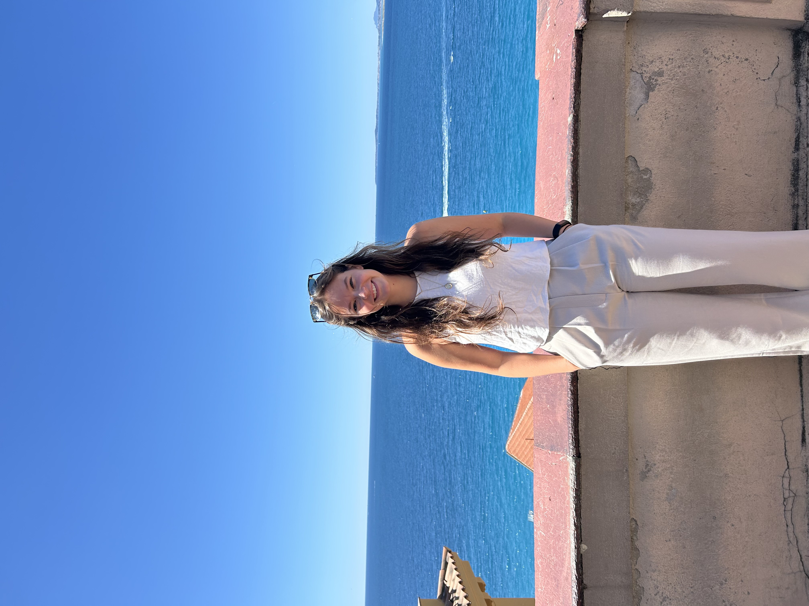
02
Engineering
My experiences at Delta Air Lines and Voith helped me realize that I’m especially drawn to engineering problems that exist in the real world — problems involving reliability, operations, people, and systems that have to keep working every day.
At Delta, I worked in A320 Family fleet engineering and saw how technical decisions connect to maintenance, airport operations, suppliers, safety, and reliability across a large aircraft fleet.
At Voith, I got a different perspective through manufacturing and operations, improving shipment visibility and tool accountability while working around the day-to-day needs of a facility.
Those experiences made me interested not only in engineering itself, but in how technical teams, operations, and organizations work together to solve difficult problems.
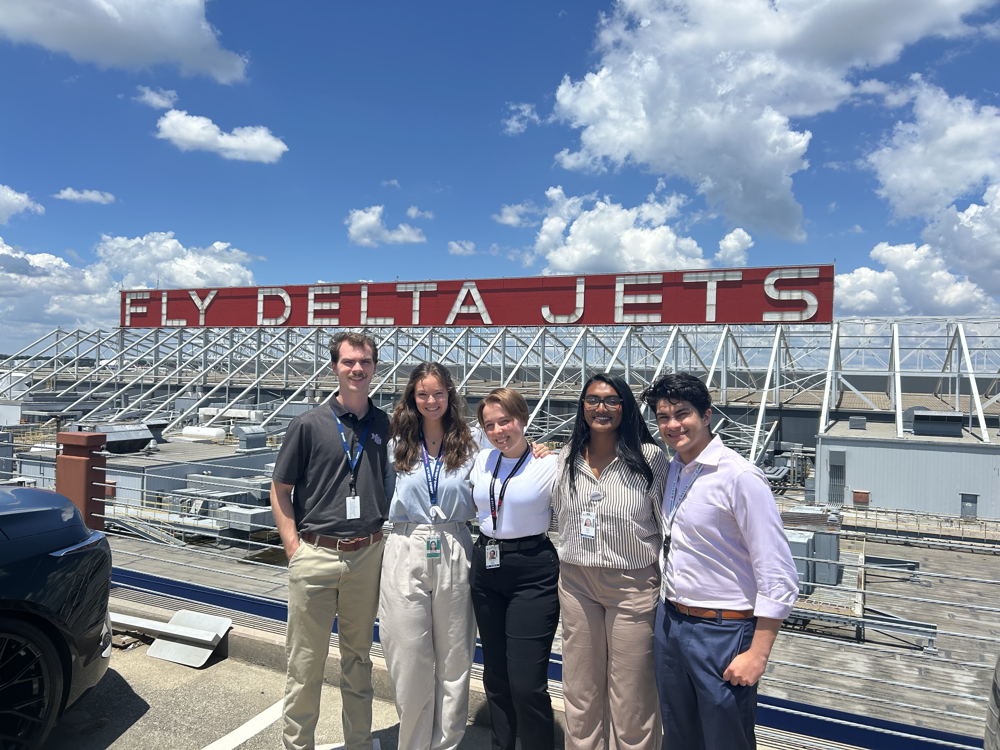
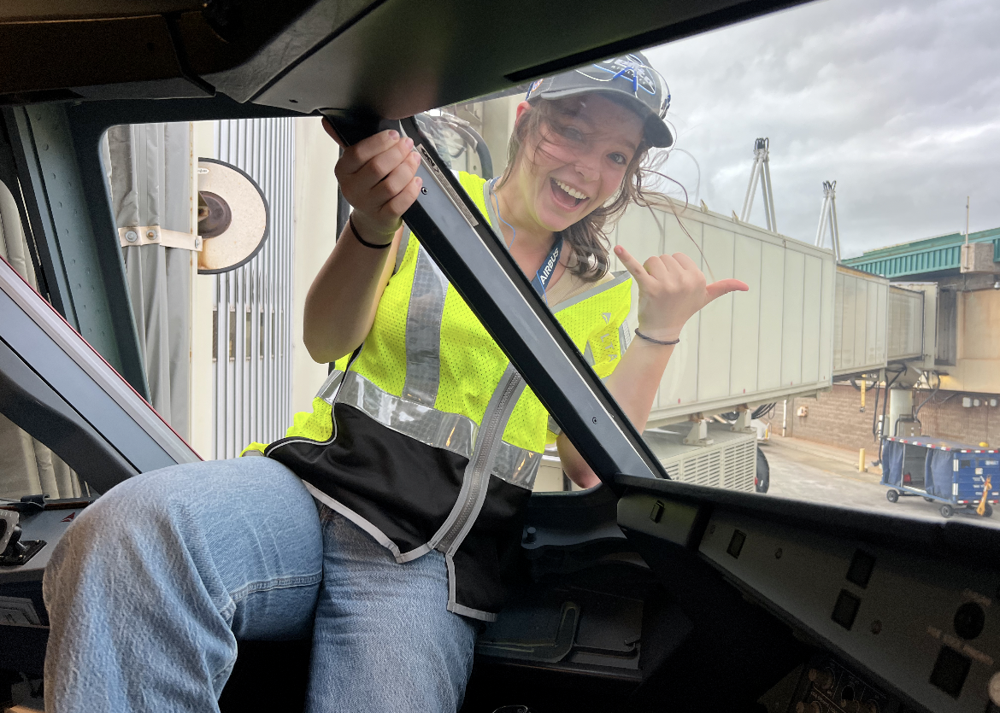
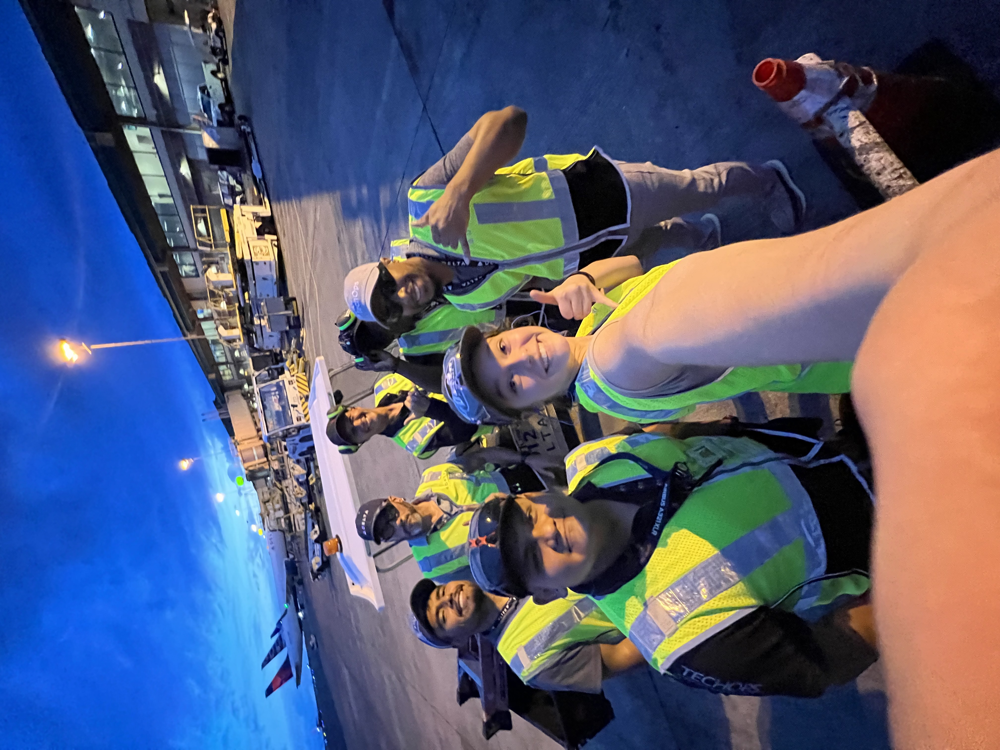
03
Music
Music has been a major part of my life for years. I play trombone with the Atlanta Concert Band and the Georgia Tech Marching Band.
I love that music is both individual and collaborative. You have to know your own part, but the experience only really works when everyone listens to one another and contributes to something larger.
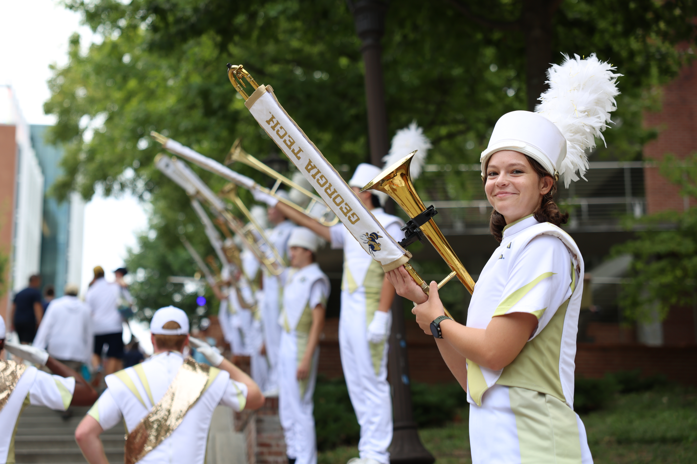
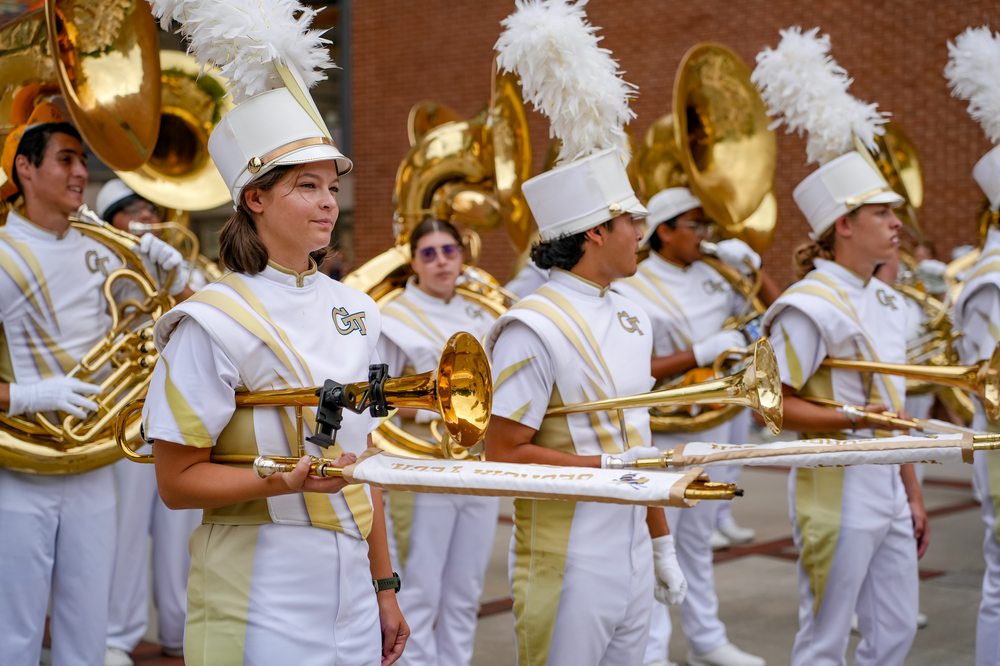
04
Travel
I love traveling because it pushes me outside of what is familiar. Experiencing different cities, cultures, food, music, architecture, and art changes the way I look at the world and usually leaves me with more questions than I started with.
Studying abroad through Georgia Tech-Europe was one of the experiences that reinforced that for me. I enjoy seeing how people live differently, what they value, and how places develop their own identity.
Art, music, film, and design are also things I naturally gravitate toward because they communicate ideas in ways that technical language cannot.
I have been to 26/50 U.S states and 21 different countries!
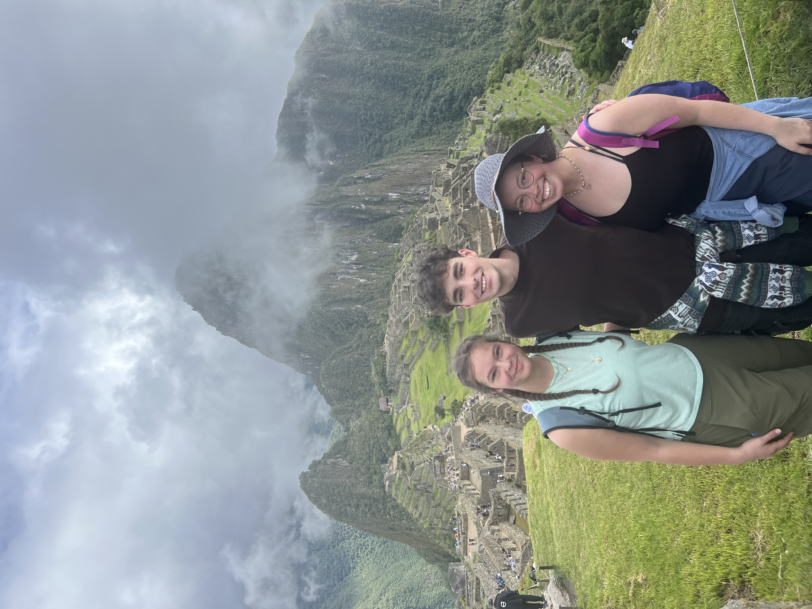
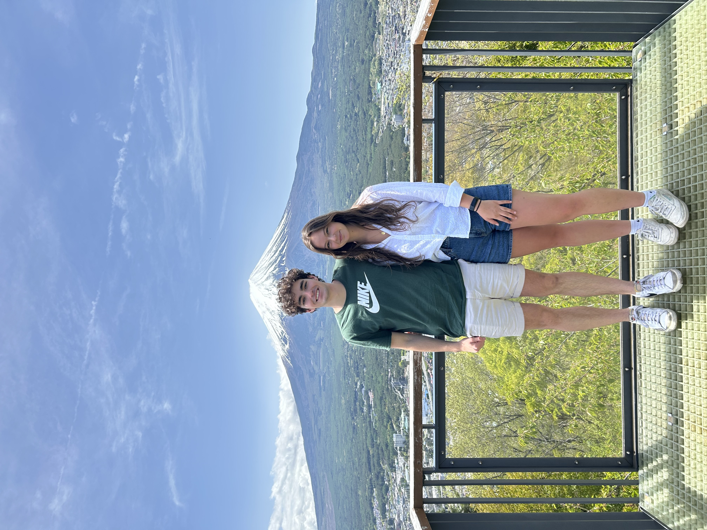
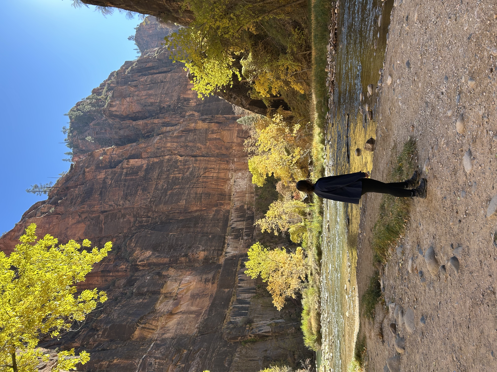

05
Sports
I’ve always enjoyed sports, especially basketball and running.
I love pushing myself mentally and physically, and I love trying new sports or jumping in on a pickup game.
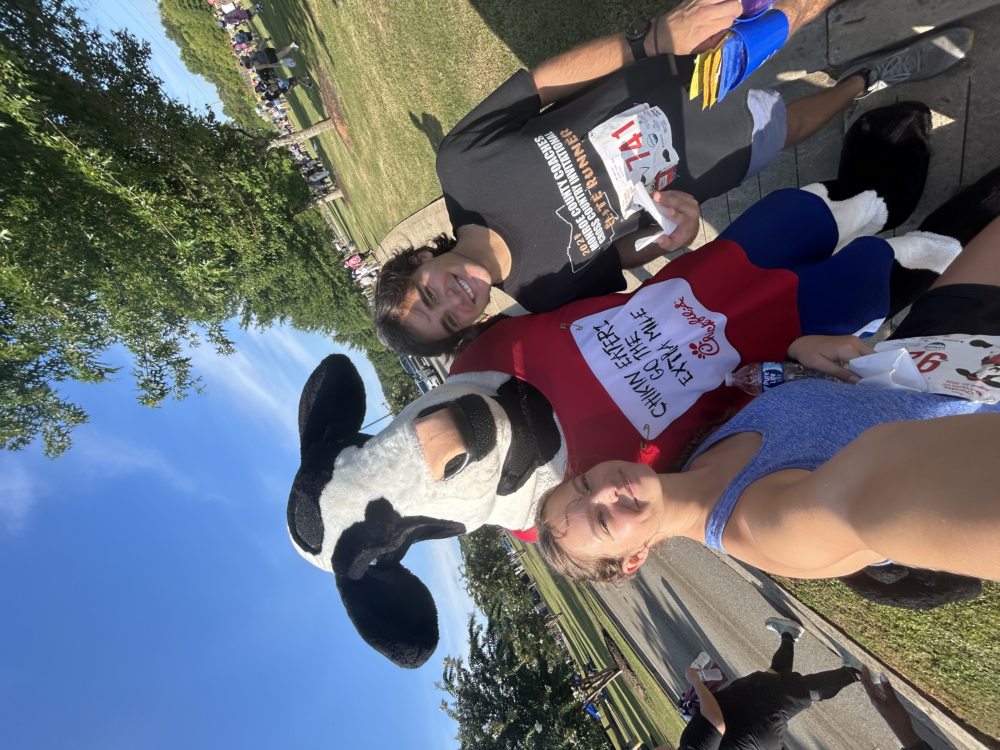
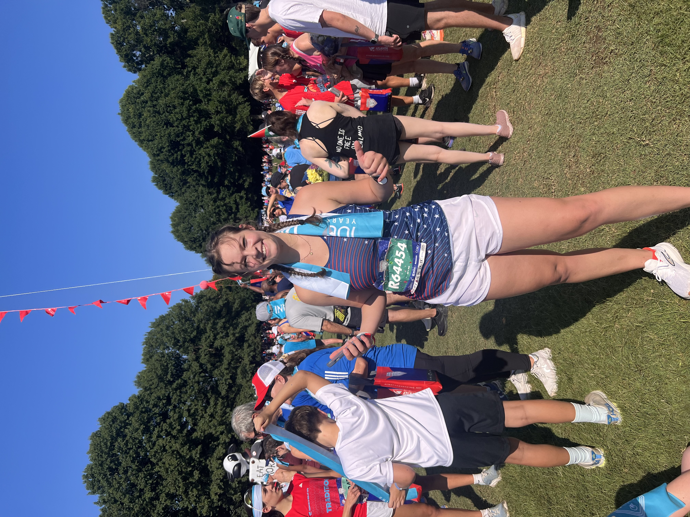
06
Community
Staying involved in my communities is important to me. I’ve served in student leadership roles at Georgia Tech, volunteered with Atlanta Mission, and stayed involved with my high school through its alumni board.
I especially enjoy opportunities where I can help someone else move forward — whether that means reviewing a resume, conducting a mock interview, mentoring someone, or simply introducing people who might benefit from knowing each other.
Involvement
Georgia Tech Energy Club
SMILE
Atlanta Mission
High School Alumni Board
Yellow Jacket Flying Club
What connects it all
I like finding different ways to connect with people and understand the world around me.
Engineering gives me a way to solve problems with other people. Music lets me create with them. Sports create shared challenges. Travel exposes me to perspectives I would not encounter otherwise. They look like very different interests, but for me they all come back to curiosity, collaboration, and connection.
Let's connect
Always interested in meeting people doing interesting work.
I'm graduating in May 2027 and currently exploring full-time engineering opportunities.